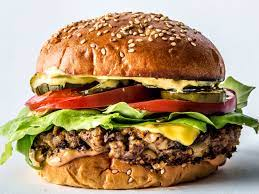

My Recipes
Here you will find three recipes.I love to make some new recipes.
Burger Mix (Vegetarian), Chicken Pizza Recipe and
eggless
tutti frutti cake

Burger Mix (Vegetarian)
A tasty make ahead vegetarian burger mix. Make in advance and have vege burgers ready in a flash for a quick and healthy snack or meal.
Chicken Pizza Recipe
This Italian favorite pizza is a delicious mix of flat bread or base topped with cheese, chillies, onion, garlic sauce and chunks of chicken.

eggless tutti frutti cake
A simple loaf cake that is made with whole wheat flour candied fruit bits, we have made it healthy by using whole wheat flour instead normal plain flour.